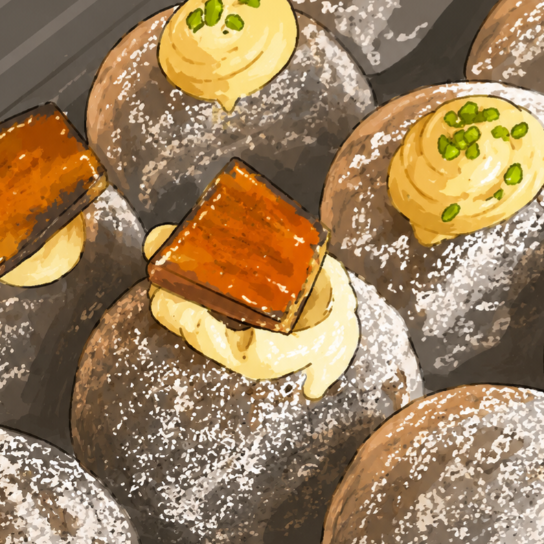

- トップ >
- newオープンカフェ紹介
newオープンカフェ紹介
広島で新しくオープンしたカフェをどのような店舗か紹介します。
- PUG 広島PARCO POP-UP
- not donut.
PUG 広島PARCO POP-UP
オープン 04/10

広島PARCO本館1階に期間限定で登場するアメリカンクッキーブランドです。
看板メニュー「ボストンクッキー」は、外はさっくり・中はしっとりとした食感で、チョコやナッツがたっぷり入った食べごたえのある一枚です。
焼きたてならではの香ばしさと濃厚な味わいが楽しめます。
イートインではアイスと合わせたクッキークランチなどのアレンジメニューも人気で、スイーツ好きや写真映えを楽しみたい人にもおすすめです。
買い物の合間のカフェタイムにもぴったりです。
住所 〒730-0035 広島県広島市中区本通10-1（広島PARCO 本館1F）
電話 03-6667-0839（PUG運営本部）
営業時間 10:00〜20:30
公式サイトPUG
このページの先頭へ
not donut.
オープン 04/08

not donut.は、2026年に広島へオープンした話題のドーナツ専門店です。
素材や味わいにこだわった手作りドーナツを提供しており、ふんわりとした食感と上品な甘さが魅力的です
おしゃれな見た目で写真映えも抜群なため、カフェ巡りや推し活の合間にもおすすめです。
人気商品の多くは早い時間に売り切れるため、早めの来店がおすすめです。
住所 〒730-0029 広島県広島市中区三川町3-12 並木カールビル1F
営業時間 12:00～15:00 ※売り切れ次第終了
公式Instagramはこちら
このページの先頭へ